講演
要領よく動いて、
機嫌よくいられる？
〜楽しく結果を出す秘訣〜
岡崎かつひろ
自己紹介
2010
株式会社XYZ設立
セミナー・出版の
企画運営
いまの仕事講演・研修本の執筆書籍プロデュース出版の挑戦者を応援
著書
これまでに書いてきた本
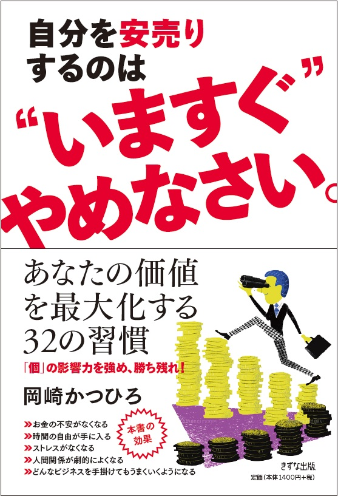
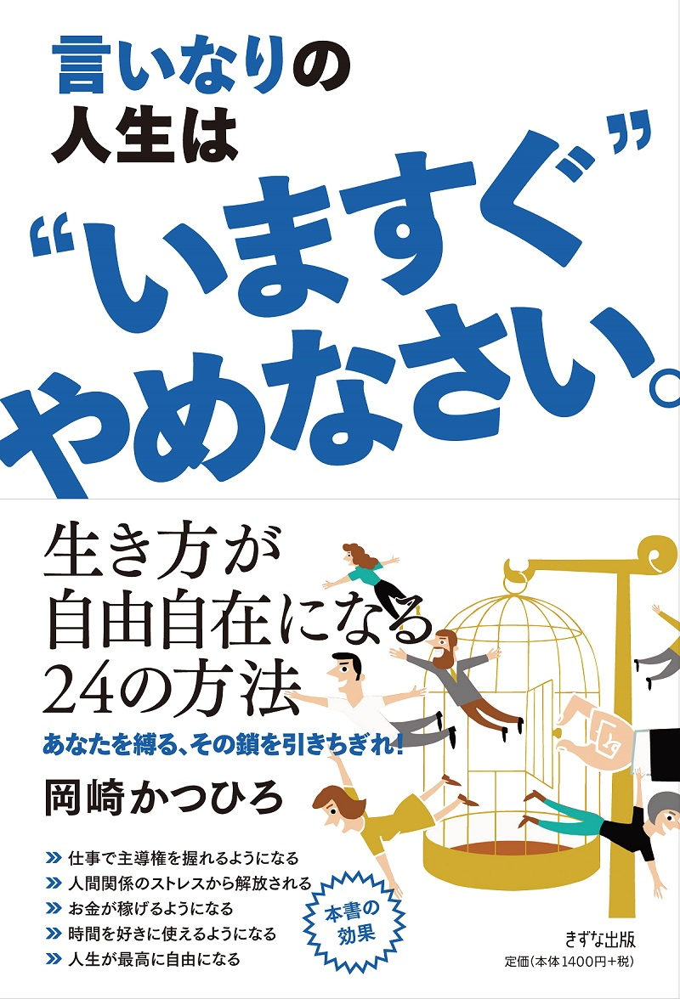
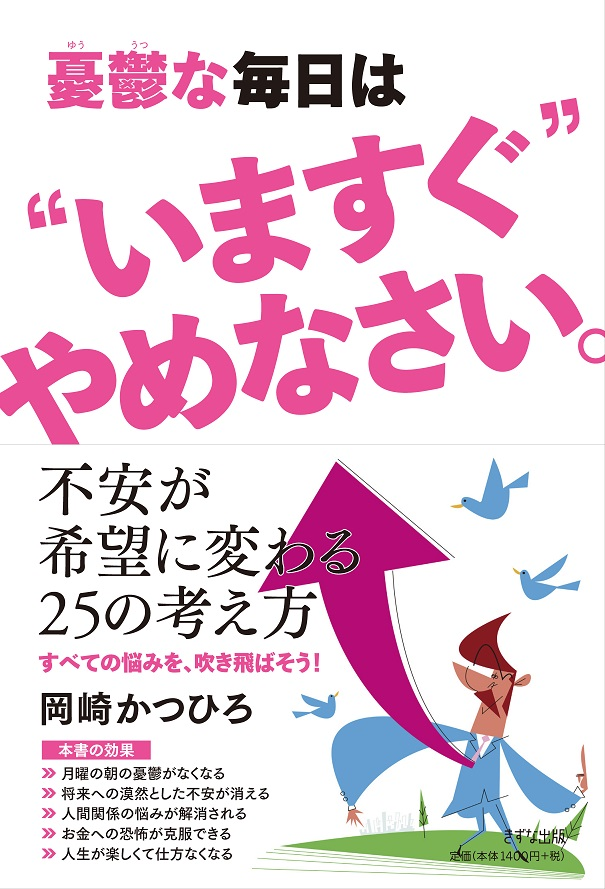
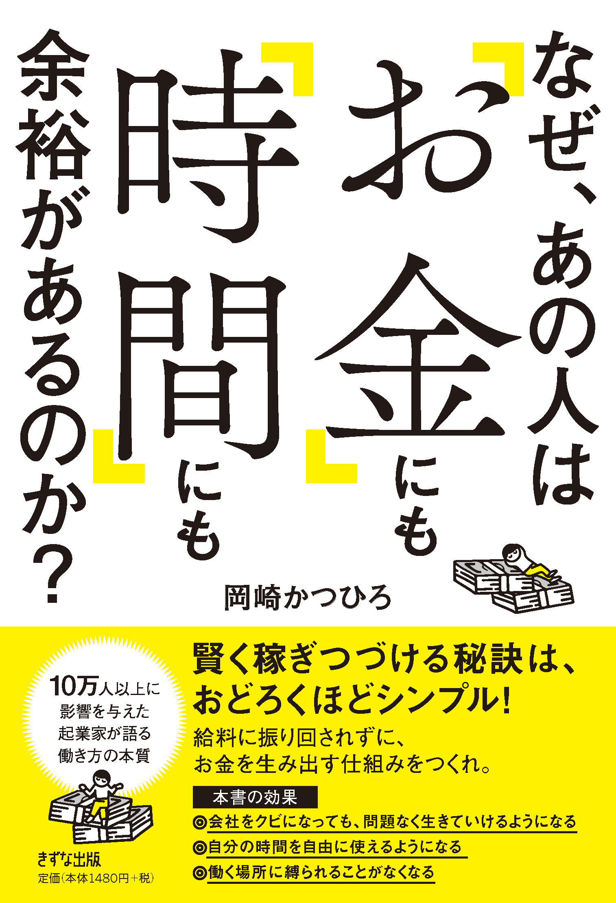
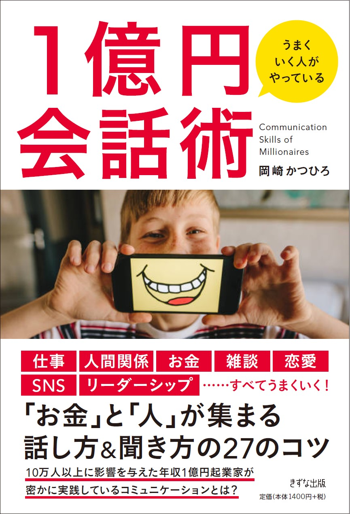
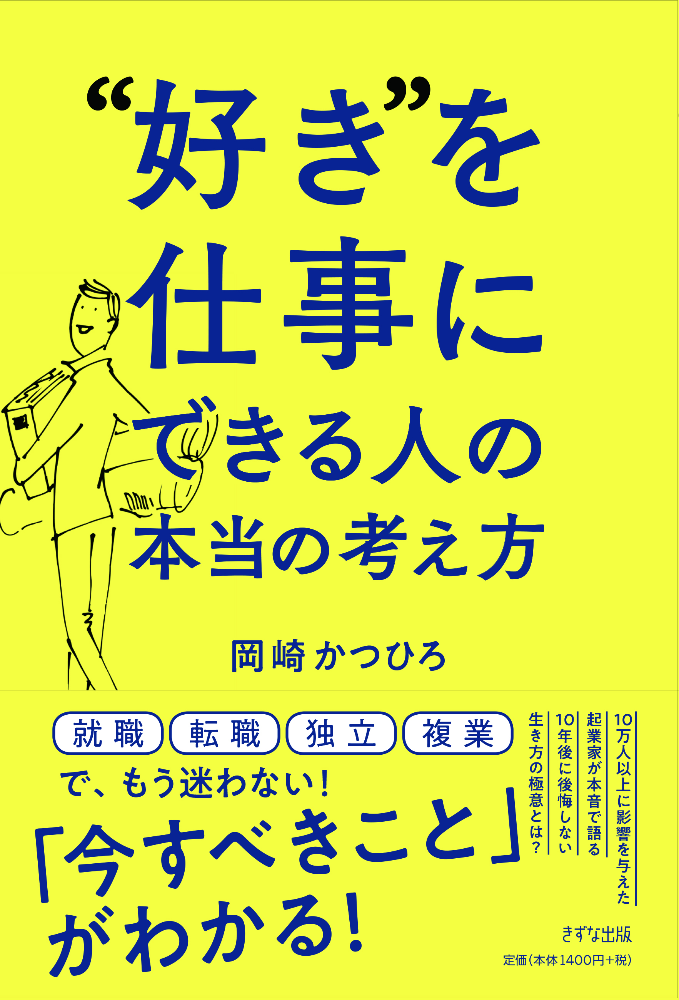
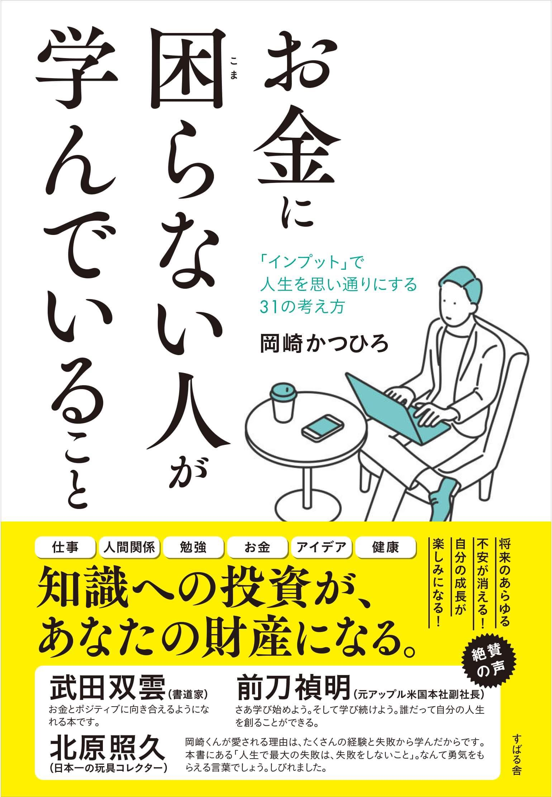
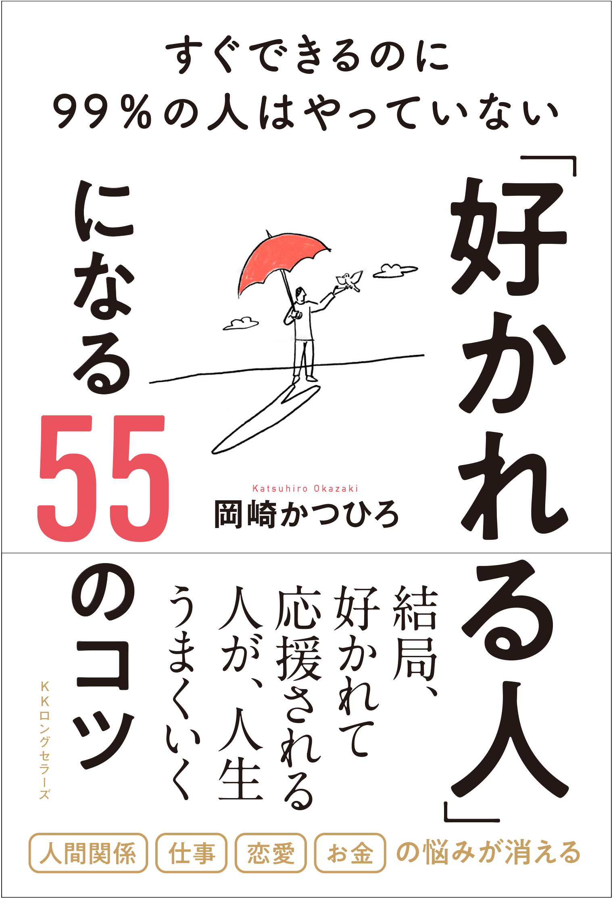
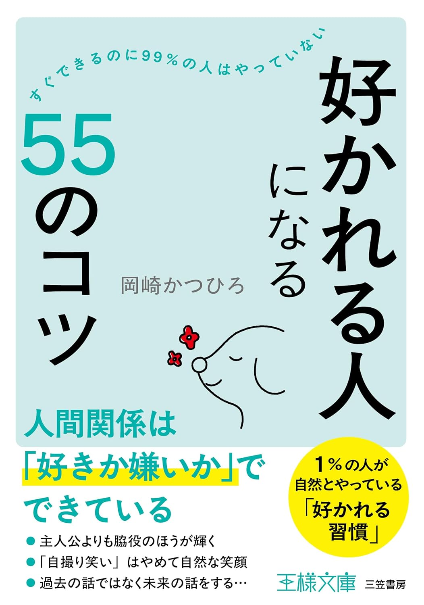
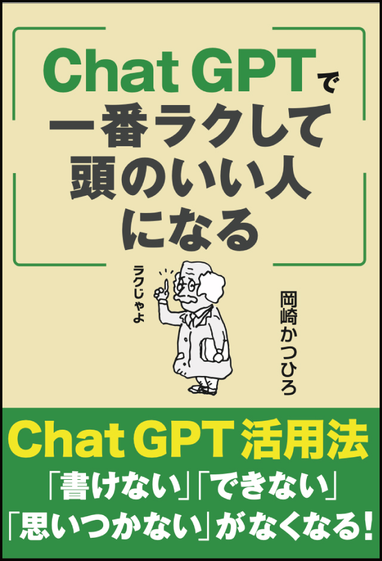
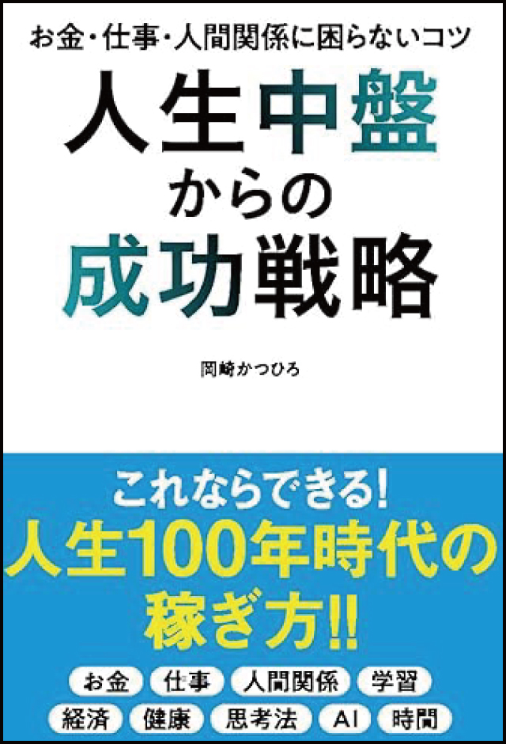
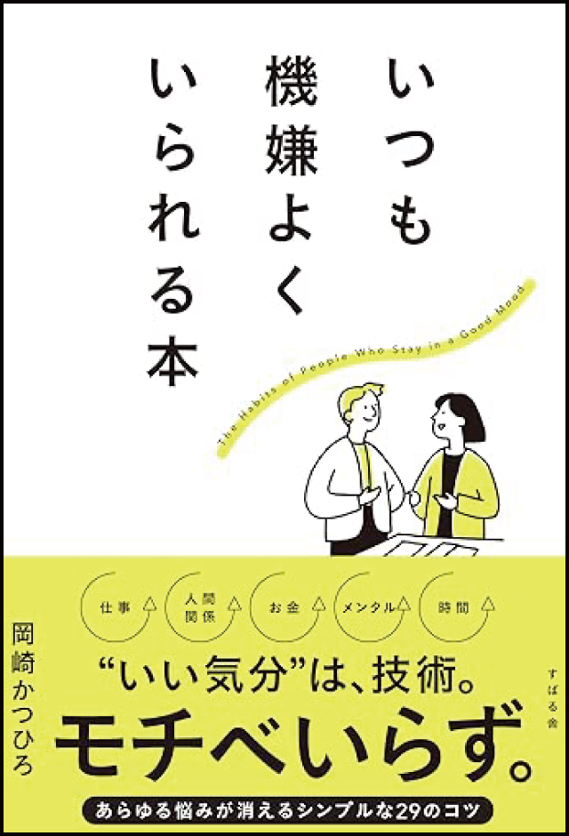
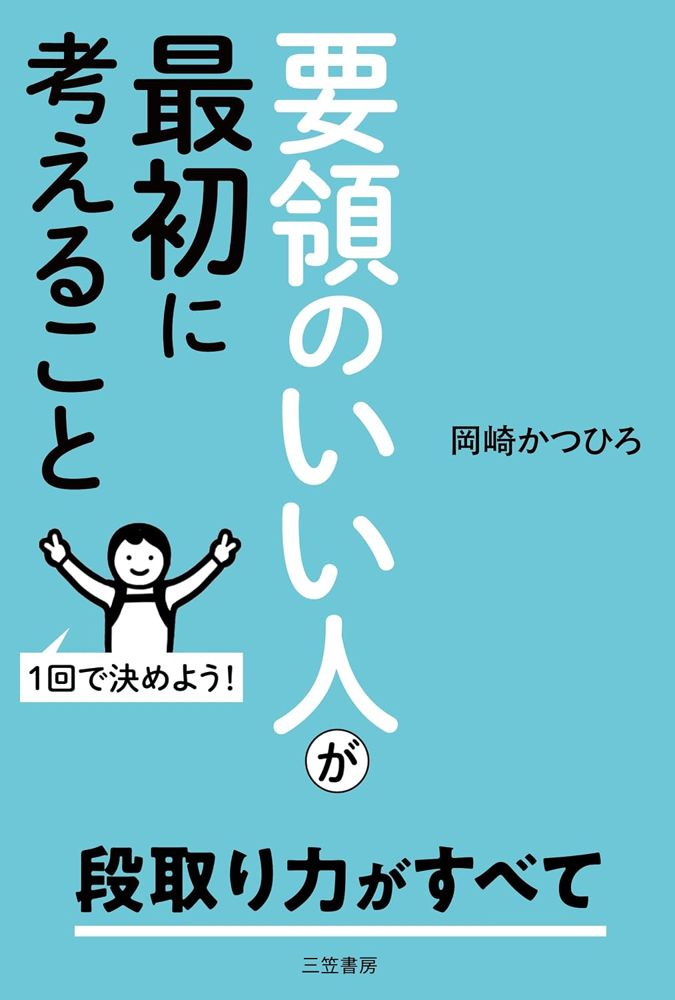
著書13冊・累計28万部
いま力を入れていること
本を出したい人を応援しています
- 優勝者は商業出版100％保証
- 優勝を逃しても出版オファー多数
- 現役編集長の企画書セミナー付き
- 毎月ちがう現役編集者が登壇
- 本になった企画書を本人が解説
- 会員の企画書をその場で添削
告白します
いちばん要領が悪かった頃の私
- 残業、月100時間
- 家に帰れず、1年半の車上生活
- それでも「がんばっている自分」に満足していた
まず、伺います
最近、要領よく
動けていますか？
当てはまる方は、手を挙げてください
もうひとつ
最近、機嫌よく
いられていますか？
当てはまる方は、手を挙げてください
このタイトル、
欲張りすぎませんか？
要領と機嫌。60分で両方は、正直ムリです（笑）
なので、今日は
要領を中心にお話しします
でも、要領よく動けたら、機嫌もよくなりませんか？
その前に、ひとつ
あなたは、
どんな働き方を目指したいですか？
収入の3つの買い方
収入の手に入れ方は、3つあります
その1
時間で買う
自分の時間を使って稼ぐ。
時給・日給の世界。
その2
お金で買う
人や機械やサービスに
お金を払って、広げる。
その3
仕組みで買う
一度つくれば、
自動で売れていく。
いろいろな分け方がありますが、今日はこの3つで考えます。
その1
収入を時間で買う
- 時給の世界。
収入を上げるには時給を上げる
- そのために能力を磨く。自分磨きが大事
- 働く場所を選ぶ。
業界で単価の水準が決まる
- ただし、時間には限りがある
その2
収入をお金で買う
- 自分の労働を、人・機械・サービスに頼む
- お金をかけて、規模を広げる
- 飲食店なら、スタッフや店長を雇う。お店を広くする
- 自分の時間は増えないのに、収入は増える
その2のつらさ 飲食店を経営していた僕の実体験
3.11やコロナで、売上が止まったとき
規模が大きくなるほど、リスクも大きくなる。
収入は大きくなっても、安心できない。
その3
収入を仕組みで買う
- 一度つくれば、自動で売れていく
- Noteの有料記事なら、
売れても仕事量は増えない
- 能力が増えなくても、収入は増やせる
- 大きなお金をかけないので、
止まっても怖くない
たとえば、こんな仕組み
「仕組みで買う」は、身近にたくさんある
Noteの有料記事
一度書けば、
読まれるたびに売れる
テンプレート・素材
デザインの型や写真、
LINEスタンプなど
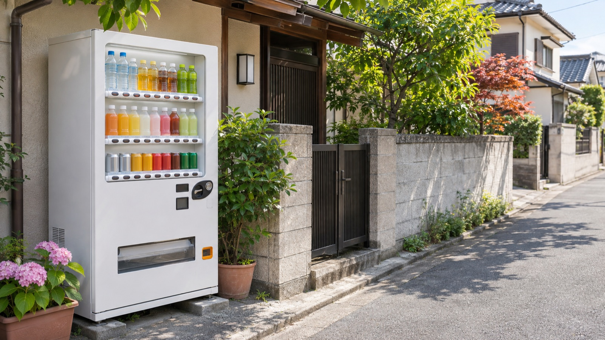
飲食店をやっていた頃の話
自動販売機を、置かせてあげていた
- 1本売れるたびに、10円くらいチャリン
- 僕は、何もしていない
- ご実家の土地の一角を貸すだけでも、チャリンの仕組みはつくれる
実は、そんなに遠い話じゃないんです。
僕の実例 出版企画書勉強会
会員が増えても、僕の仕事量は変わらない
収入：会員が増えるほど上がる
仕事量：ずっと同じ
毎月の勉強会を準備して、開く。
やることは、会員が1人でも
1万人でも同じです。
3つを並べてみると
いちばん安心して働けるのは、どれ？
| 時間で買う | お金で買う | 仕組みで買う |
|---|
| 収入の伸び | 時間が上限 | 大きく伸びる | 積み上がる |
|---|
| 仕事量 | 収入と一緒に増える | 管理の仕事が増える | 増えない |
|---|
| 止まったとき | 収入も止まる | 支払いだけ残る | 大きな痛手はない |
|---|
| 安心感 | △ | × | ◎ |
|---|
理想の働き方
収入は増える。
でも、仕事量は増えない。
そんな働き方、目指したくありませんか？
遅れの法則
仕組みは、つくってすぐには結果にならない
- 最初は、ほとんど動かない
- 月5万、10万と積み上げる
- やがて100万へと増やしていく
これが「仕組みで買う」働き方の基本です。
だから、まずは
目の前の仕事で、
要領よくなろう。
時間を縮めて、楽ができる方法を身につける。
あいた時間を、仕組みづくりに当てる。
今日の定義
要領がいいとは、
先に考えて、
あとは考えなくていい状態を
つくれること。
では、なぜそうできないのか
いちばんの原因は、真面目すぎること
- 目の前のこと、次にやることに、一生懸命になってしまう
- 楽をすることに、罪悪感を感じてしまう
- 真面目な人ほど、なおさら
今日、持って帰っていただきたい発想
がんばる向きを変える
ここから本題
要領よく動く3つのコツ
3
先に仕込む
放っておいても進むものを、
先に動かしておく
WORK 11分
いま頭の中にある
「やらなきゃ」を、
思いつくだけ書き出してください。
お手元の紙で大丈夫です。このあと、もう一度使います。
書き出すと、少し軽くなったはずです
「あれもやらなきゃ」が頭にある＝気ぜわしい
- この状態だと、頭の中の生産性が落ちる
- マルチタスクは、頭の中では原則できない
- 覚えておく必要はない。紙やスケジュールに任せる
- 大事なのは、何も考えずに進むようになっているか
仕事は追うもの。追われるものではありません。
多くの人がハマっていること
「急ぎだけど、大事じゃないこと」に
振り回されている
- なんとなく来た連絡に、すぐ反応する
- 頼まれたから、つい引き受ける
- いつもやっているから、続けている
何かをやる前に、何をやめるかを考える。
さっき書き出したものを
3つの箱に分けてみる
箱 1
やめる
・惰性で出ている集まり
・なんとなく見るSNS
・完璧にしすぎている作業
箱 2
人に渡す
・家族にできる家事
・得意な人がいる作業
・お金を払って頼めること
箱 3
AIに渡す
・メールや文章の下書き
・調べもの・まとめ
・画像や資料づくり
「AIに渡す」の箱は、このあとの話につながります。
WORK 21分
書き出した中から
「やめる」ものを1つ選んで、
お隣の方に宣言してください。
コツ 3
先に仕込む
放っておいても進むものを、先に動かす
いちばん先にやるべき仕事
相手がある仕事は、先に渡す
手が空けば、自分の状態を自分で整えられる。
たとえば、エレベーター
出口で「開」を押しっぱなしの人
- 人がいいんです。マナーだと思ってやっている
- でも正直、けっこう邪魔です（笑）
- そもそも今のエレベーターは、押さなくても開いている
- 何も考えずにやっている。これが要領が悪くなる原因
もうひとつ
誰も乗ってこないなら、
「閉」を押してから、階数。
ほんの少しの差。でも、この癖をつけていく。
僕の話をします
最近、大根の浅漬けにはまっています
- 塩漬けにして、水を抜く
- 最後に出汁とお酢を入れる
- これで、2〜3日後の自分の主食が手に入る
- 「そろそろ無くなるぞ」ではなく、無くなる前に仕込む
コツ3のまとめ
放っておいても進むものを、
先に仕込む。
仕組みづくりも同じ。先に仕込んだ人から、あとで楽になる。
そして、いま
放っておいても進むものの
最たるものが、AIエージェント。
歴史の話をひとつ
いま、3度目の革命のなかにいます
革命とは、やらなくて済むようになること。
いま、ここ
AI革命
専門スキルがなくても
頼めるようになった
ここが違います
生成AIと、AIエージェントは別物
生成AI（ChatGPTなど）
料理研究家
レシピを教えてくれる。
作るのは、あなた。
AIエージェント（クロードコードなど）
専属シェフ
厨房に立って、
買い出しから片づけまで全部やってくれる。
たとえば、こんな使い方
YouTubeのサムネイルづくりを、仕事として受ける
②と③を、AIエージェントが担当します。
※ここからの画面は、説明用のイメージです。
つまり
「時間で買う仕事」が、
「仕組みで買う仕事」に変わる。
やりとりの手間は減って、お客様は喜ぶ。
今日のまとめ
楽しく結果を出すための順番
要領のコツは3つ。書き出す／やめる／先に仕込む
今日の答え
要領よく動ける人は、
機嫌よくいられる。
最後に、ご案内
学び続ける場所として 出版企画書勉強会
まずは3ヶ月、無料その後 月3,850円
1日あたり、ジュース1本ぶん
- 毎月ちがう出版社の現役編集者がゲスト
- 本になった企画書を、つくった本人が解説
- あなたの企画書に、その場でアドバイス
- 過去の勉強会は録画でいつでも見られる
ありがとうございました
くわしくは、このあとの交流タイムで直接どうぞ。